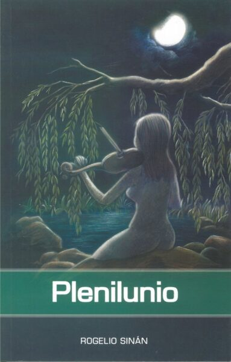
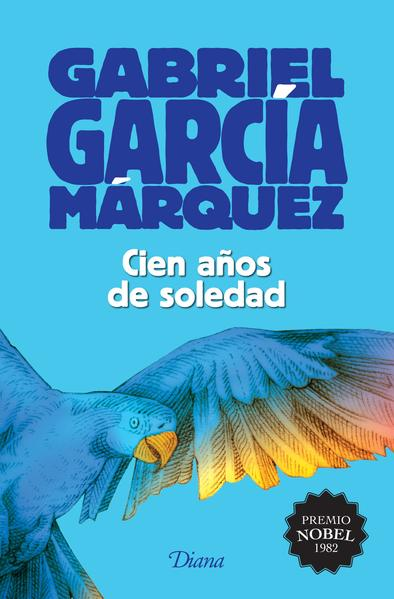
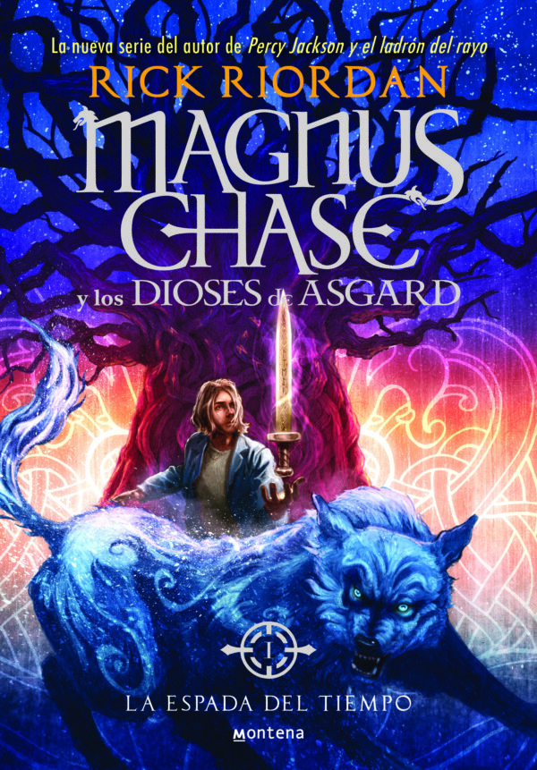
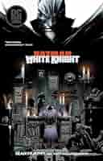
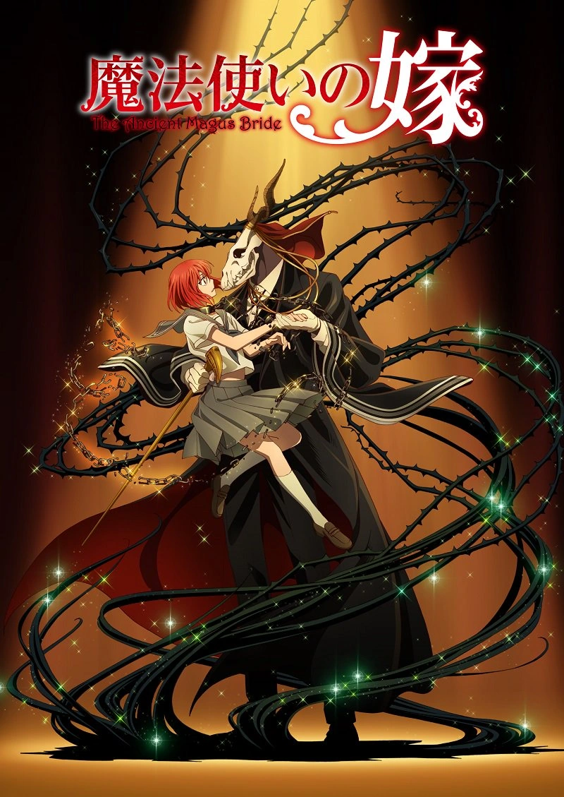

Plenilunio
Autor:Rogelio Sinán
Poemario panameño que exalta la naturaleza, la vida y el amor con un estilo lírico y sensorial.

Soy una persona que intenta ser práctica. Me gusta hacer las cosas de la forma más sencilla posible y poder hacer lo posible para cumplir con las cosas que me propongo hacer. Tengo un gusto innato en ayudar a quien pueda necesitarlo, aunque a veces eso no sea de mi conveniencia, aun así, a pesar de los regaños, ayudar a alguien siempre valdrá la pena. Me considero una persona introvertida y que no le gusta mucho hablar de sí misma. Aunque, en contradicción, me gusta hacer reír a las personas con ocurrencias o chistes.
Me gustan los videojuegos, los comics, los libros y las experiencias emocionantes. Desde niño siempre me vi maravillado por las cosas que no podía entender y obsesionarme hasta poder dominarlas o conocerlas, así descubrí mi gusto por las matemáticas y el lado lógico de las cosas que luego exploré en mi adolescencia, ahora mismo intento conocer más ese lado artístico que nunca pude desarrollar por falta de perspectiva. Un gusto muy reciente es la escritura, me gusta escribir historias cortas, analizar su estructura y crear la mía propia con tal de expresar mis emociones, sensaciones y creencias a quien quiera leerlas. Al escribir, siento que estoy expresandome de una forma que nunca podré hacerlo en persona.
Autor:Rogelio Sinán
Poemario panameño que exalta la naturaleza, la vida y el amor con un estilo lírico y sensorial.

Autor:Gabriel Garcia Marquez
Saga familiar de los Buendía en Macondo, ícono del realismo mágico.

Autor:Rick Riordan
Novela juvenil de aventuras basada en la mitología nórdica.

Autor: Sean Murphy
Historia alternativa donde el Joker se convierte en héroe y Batman en sospechoso.

Autor:Korea Yamazaki
Manga que combina fantasía y romance sobre la relación entre una joven y un mago misterioso.

Director: Hideaki Ano
Protagonistas: Hiroki Hasegawa, Mikako Ichikawa
Director: Chad Stahelski
Protagonistas: Keanu Reeves, Lawrence Fishburne
Director: Seth MacFarlane
Protagonistas: Mark Wahlberg, Mila Kunis
Director: Anaïs Mitchell
Protagonistas: Reeve Carney, Eva Noblezada
Director: Lin Manuel Miranda
Protagonistas: Lin Manuel Miranda, Leslie Odom Jr.
| Canción | Género | Artista | Álbum / Single | Año |
|---|---|---|---|---|
| Hotel California | Rock | Eagles | Hotel California | 1976 |
| Entre Caníbales | Rock Alternativo | Soda Estereo | Canción Animal | 1990 |
| One | Trash Metal | Metallica | ...And Justice for All | 1971 |